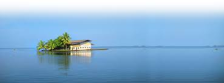

Vembanadu Lake
Vembanad Lake is at the heart of Kerala Backwaters tourism with hundreds
of kettuvallams plied on it and numerous resorts on its banks.
The Kumarakom Bird Sanctuary is located on the east coast of the lake.
The lake has become a major tourist attraction. A generally safe
destination, this place had just one incident of tourist harassment
in 2004 as reported in The Times of India.

Krishnapuram Palace
The palace complex, which now functions as an archaeological museum,
is a treasure house of ancient paintings and inscriptions, coins,
megalithic remains, artefacts made of wood, brass and stone sculptures.
Some of the prominent displays in the complex are: The mural of
Gajendra Moksham, Kayamkulam Val (sword), Buddha's statue of the 10th
century and ceremonial utensils and many other artefacts.